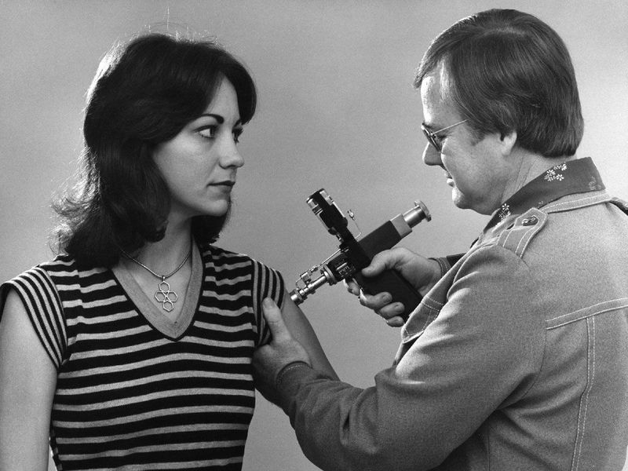

Reflecting On The Past Mistakes of The 1976 Swine Flu
Ashley Lee. 6/24/2020
Beginning at the end of 2019, COVID-19 has claimed the lives of millions of individuals. Currently, after more than six months after the first case was reported, scientists are in the process of creating and testing COVID-19 vaccines.
Although creating an effective vaccine was the moment many have been waiting for, perhaps people should take a moment to look back in history and reflect upon the course of action the U.S. decided to follow during the swine flu outbreak in 1976.
On Feb. 3, 1976, virus isolates from recruits at Fort Dix, New Jersey, who exhibited influenza-like illnesses were sent to the CDC, according to the Center for Disease Control and Prevention (CDC). Although most of the isolates were identified as the contemporary epidemic strain, CDC found evidence of swine influenza A related to the 1918 flu pandemic, an infection more commonly known as swine flu that killed 50 to 100 million people worldwide.
It was decided a couple of days later, that surveillance at Fort Dix would be heightened, ill recruits would be investigated to determine if contact with pigs had occurred, and recruits would be tested to determine if the swine flu spread.
There was no evidence that recruits had contact with pigs (which was the case during two other instances in the past), but serologic testing revealed that over 200 recruits had been infected and that person-to-person transmission had occurred.
On March 10, the Advisory Committee on Immunization Practices of the United States Public Health Service (ACIP) concluded a pandemic was a possibility. The ACIP recommended that an immunization program be launched, as they saw this early detection of the outbreak as an opportunity to produce a vaccine.
"If we believe in prevention, we have no alternative but to offer and urge the immunization of the population,” an ACIP member said.
The CDC director recommended that the federal government should contract with pharmaceutical companies to produce vaccines for the entire population. And news soon reached President Gerald Ford, who then began the National Influenza Immunization Program (NIIP), which had an estimated budget cost of $137 million. An appropriation bill was then passed with unanimous approval from all four committees.
However, not everyone approved of this plan, including a representative from New Jersey and a medical society from Wisconsin.
Furthermore, according to the Department of Epidemiology of UCLA , the insurance industry announced they would not insure the manufacturers against liability from the vaccine. And the pharmaceutical companies also refused to sell the vaccine to the government, which led to Congress passing a bill that guaranteed profits and waived corporate responsibility for the vaccines.
In spite of obstacles presented with developing a vaccine, the NIIP administered a program that immunized 45 million people in 10 weeks.
However, cases of Guillain-Barré Syndrome (GBS), a neurological disorder that can lead to paralysis and potentially death, amongst those who received the vaccines were reported. The vaccine’s connection to the syndrome was unclear, but epidemiologists concluded that the number of cases of GBS appeared to be greater after the vaccine than before.
As there were only about 200 cases of swine flu and no further evidence of transmission, federal health officials decided that due to the possibility of an association of GBS with the vaccine, the immunization needed to be stopped. And thus, the NIIP ended on Dec. 16, 1976.
However, by the time the program ended, about 25% of the U.S. population, were already immunized. And more than 500 people developed GBS after the vaccination and 25 people died, according to the LA Times.
There have been many studies since 1976 to evaluate if other flu vaccines were associated with GBS. The CDC reports that currently, about one out of one million vaccinated people may be at risk for GBS associate with the influenza vaccine.
“The basic history lesson when it comes to vaccines and immunization is that there always has been a risk and there always will be a risk,” professor of the culture of medicine at Harvard University David S. Jones said to the Association of American Medical Colleges.
Currently, there are many efforts around the world to create effective vaccines for COVID-19. In the U.S., a partnership called Operation Warp Speed was initiated by the federal government to reach its goal of 300 million doses of the COVID-19 vaccine by January 2021.
Many companies are currently in the testing stage, with companies testing their vaccine on people who volunteered to participate in the trials.
“AstraZeneca, which is developing an adenoviral vector vaccine...is recruiting 10,000 people in the UK, 30,000 people in the US, and potentially 2,000 people in Brazil...If the trial is successful, AstraZeneca says, it could start distributing the vaccine as early as September in the UK and October in the US,” Chemical and Engineering News reported.
The current situation is not the same as the past, as vaccines are being created as a result of a pandemic, rather than due to panic and fear. However, it must be acknowledged that if countries continue to rush the process of creating a vaccine, it is not a question of if there will be side effects, but a matter of when they appear and who will take responsibility when it happens.

This 1976 photograph shows a woman receiving a vaccination during the nationwide swine flu
vaccination campaign. (CDC)
Cover Photo: https://www.cdc.gov/flu/swineflu/index.htm